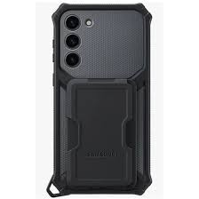
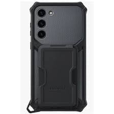

официальный сайт samsung
хотите себе samsung s23+
все телефоны модели s23+ 1)облодают 4 камерами 3 фронтальная 1 сэлфикамера. 2) тонкий корпус 3)лёгкий
модель выпускается в 3 цветах
характеристики :samsung S23+ Масса S23: 168 г (5,9 oz) S23+: 195 г (6,9 oz) S23 Ultra: 233 г (8,2 oz) Операционная система Android 14 с One UI 6.0 Процессор Octa-Core (1x3,36 ГГц Cortex-X3 & 2x2,8 ГГц Cortex-A715 & 2x2,8 ГГц Cortex-A710 & 3x2,0 ГГц Cortex-A510) Создан с любовью к природе Почувствуйте заботу о природе в каждой детали. Мы создали этот смартфон с использованием переработанных стекла и ПЭТ-пленки, а также природных красителей. А основой для коробки стали переработанные бумажные материалы.2,3,4,5
Готов к проверкам на прочность
Рамка из самого прочного армированного аллюминия, который когда-либо устанавливался на смартфоны Samsung Galaxy и стекло Corning® Gorilla® Glass Victus® 2 на фронтальной и задней панелях делают дизайн не только прекрасным, но и функциональным. Кроме того, Galaxy S23 и S23+ обладают классом защиты IP68 от пыли и воды. *Стекло на задней панели не включает в себя стекло камеры. В рамку не входят клавиши регулировки громкости и боковые клавиши, а также лоток для SIM карты. *Galaxy S23, S23+ и S23 Ultra имеют класс защиты IP68. Основано на условиях лабораторных испытаний при погружении в пресную воду на глубину до 1,5 метров до 30 минут. Не рекомендуется для использования на пляже или в бассейне. Водонепроницаемость и пыленепроницаемость устройства не является постоянной и может снижаться со временем из-за естественного износа.
 
